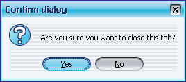
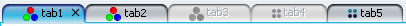
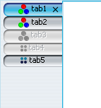

This entry
describes the capabilities that release 2.1 of Substance
look-and-feel provides for your tabbed panes. They are:
- Animation effect for tabs with modified (and unsaved) content
- Close buttons on tabs with listeners
Following the feedback from the users (thanks Raj), the latest daily drop of version 2.2
(code-named El Paso) provides even more functionality available to your Swing application
once you start using Substance LAF.
The first request was to enhance the listener mechanism on close buttons of tabbed panes.
As mentioned in the above blog, you can register any number of listeners that will be called
when close button of some tab in some tabbed pane is clicked. The CloseTabListener
interface defines the following two methods:
/**
* Called when a tab is about to be closed.
*/
public void tabClosing(JTabbedPane tabbedPane, Component tabComponent);
/**
* Called when a tab is closed.
*/
public void tabClosed(JTabbedPane tabbedPane, Component tabComponent);
There were two separate requests regarding this mechanism:
- Allow the application listener to veto the tab closing
- Allow registering listeners per tabbed pane (and not globally)
Now, if you want to provide additional logic and veto the tab closing, you need to implement
the VetoableTabCloseListener that extends the TabCloseListener and adds the
following function:
/**
* Called when a tab is about to be closed. Can veto the tab closing.
*
* @return true if the corresponding tab shouldn't be closed,
* false otherwise.
*/
public boolean vetoTabClosing(JTabbedPane tabbedPane,
Component tabComponent);
All vetoable listeners that are either registered for the specific tabbed pane, or are
registered globally (for all tabbed panes) are called when the close icon is clicked.
If at least one of them returns false, the tab will not be closed. Otherwise,
the tabClosing and tabClose functions will be called. A simple example
is to show the confirmation dialog as:
public void tabClosed(JTabbedPane tabbedPane,
Component tabComponent) {
System.out.println("Closed tab - specific");
}
public void tabClosing(JTabbedPane tabbedPane,
Component tabComponent) {
System.out.println("Closing tab - specific");
}
public boolean vetoTabClosing(JTabbedPane tabbedPane,
Component tabComponent) {
int userCloseAnswer = JOptionPane.showConfirmDialog(
Check.this,
"Are you sure you want to close this tab?",
"Confirm dialog", JOptionPane.YES_NO_OPTION);
return (userCloseAnswer == JOptionPane.NO_OPTION);
}
The following dialog will be shown to the user when the tab close button is clicked:

Note that this extension doesn't break the existing API which is still fully supported
and provides the exact same functionality as before.
The second request was to provide an option for drawing vertical rotated tabs when the
current placement for the tabbed pane is either LEFT or RIGHT. The solutions
described elsewhere
(by Santosh
and Lee Ann)
involve a composite icon that simulates the tab and effectively hides the text from the
tabbed pane UI delegate (by putting it in the icon and rotating the entire icon). The
above solutions work, but involve using third-party classes and changing your code to use
these classes. In addition, since Substance provides the close buttons on tabs, they
are not easily applicable.
Substance provides unintrusive solution for rotated vertical tabs. There are two
properties that you can set:
- SubstanceLookAndFeel.TABBED_PANE_VERTICAL_ORIENTATION is set on a tabbed pane
or on UIManager (or both) and instructs the UI delegate to use vertical (rotated) layout
for the LEFT and RIGHT-placed tabbed panes.
- SubstanceLookAndFeel.TABBED_PANE_VERTICAL_ORIENTATION_ROTATE_ICONS is set a
tab, a tabbed pane or on UIManager (or any combination) and instructs the UI delegate
to leave the icon unrotated.
Note that if you don't wish to create the explicit dependency in your code on the
SubstanceLookAndFeel class, you can use the string values for the above properties.
Here are a few screenshots to illustrate the outcome, followed by code samples:
-
TOP-placed tabbed pane with five tabs. Each tab has text, icon and a close
button (visible when the tab is either selected or under mouse):

-
LEFT-placed tabbed pane under standard layout. Note that the tabs are not
rotated and take too much horizontal space:

-
Four parts of the image, from left to right:
- LEFT-placed tabbed pane with vertical layout. The first tab has unrotated
icon, the third tab has unrotated icon which is also disabled, all other tabs have rotated icons.
- LEFT-placed tabbed pane with vertical and scroll layout. The icons are same as above.
- RIGHT-placed tabbed pane with vertical and scroll layout. The icons are same as above.
- RIGHT-placed tabbed pane with vertical layout. The icons are same as above.

Here is how the tabs in the last examples were created:
JTabbedPane jtp = new JTabbedPane();
TabNumberedPanel tnp1 = new TabNumberedPanel(jtp, 1);
tnp1.putClientProperty(
SubstanceLookAndFeel.TABBED_PANE_VERTICAL_ORIENTATION_ROTATE_ICONS,
Boolean.TRUE);
jtp.addTab("tab1", SubstanceImageCreator.getThemeIcon(null), tnp1);
jtp.addTab("tab2", SubstanceImageCreator.getThemeIcon(null),
new TabNumberedPanel(jtp, 2));
TabNumberedPanel tnp3 = new TabNumberedPanel(jtp, 3);
tnp3.putClientProperty(
SubstanceLookAndFeel.TABBED_PANE_VERTICAL_ORIENTATION_ROTATE_ICONS,
Boolean.TRUE);
jtp.addTab("tab3", SubstanceImageCreator.getThemeIcon(null), tnp3);
jtp.addTab("tab4", SubstanceImageCreator.getHexaMarker(4,
SubstanceLookAndFeel.getTheme()), new TabNumberedPanel(jtp,
4));
jtp.addTab("tab5", SubstanceImageCreator.getHexaMarker(5,
SubstanceLookAndFeel.getTheme()), new TabNumberedPanel(jtp,
5));
jtp.setEnabledAt(2, false);
jtp.setEnabledAt(3, false);
jtp.putClientProperty(
SubstanceLookAndFeel.TABBED_PANE_VERTICAL_ORIENTATION, true);
Note that you get the desired behaviour by setting a few client properties, which
have no effect under other look-and-feels.
The only limitation of this technique is for tabs that support arbitrary components
(added in Mustang, described in
this
blog entry by Alexander Potochkin). Such tabs will not be rotated correctly, since
these components are not painted using the UI delegates at all. I have discussed this
with Alexander and he pointed out additional problem - the need to translate mouse
coordinates to allow the tab component to correctly handle the events. The bottom line
(at least for Mustang) is - do not use this feature if your application is using the
new JTabbedPane functions (which automatically implies that it's running under Mustang).
One last thing - if you like Substance, help internationalize it! (small print -
eternal glory is not guaranteed :) Starting from version 2.2 (code-named El Paso)
the additional UI elements (system menu items, heap status panel, menu search panel)
are internationalized. You are welcome to view
the list of
available translations and send me additional translations to kirillcool [at]
yahoo.com. Thanks in advance